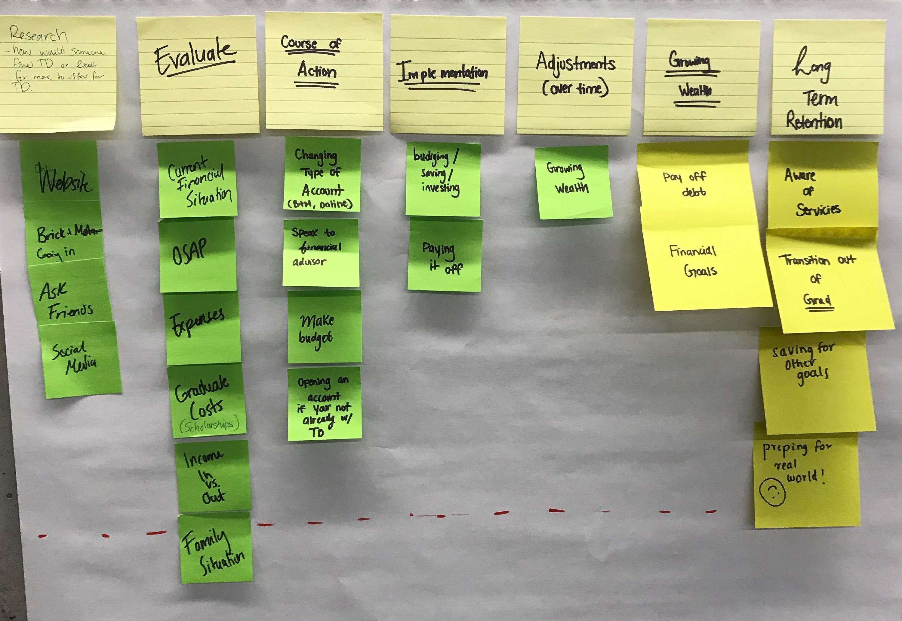
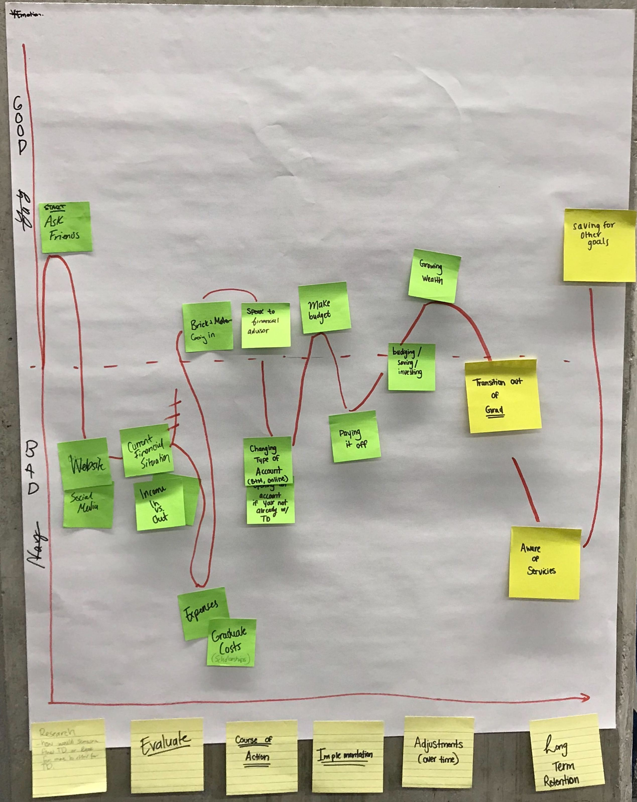
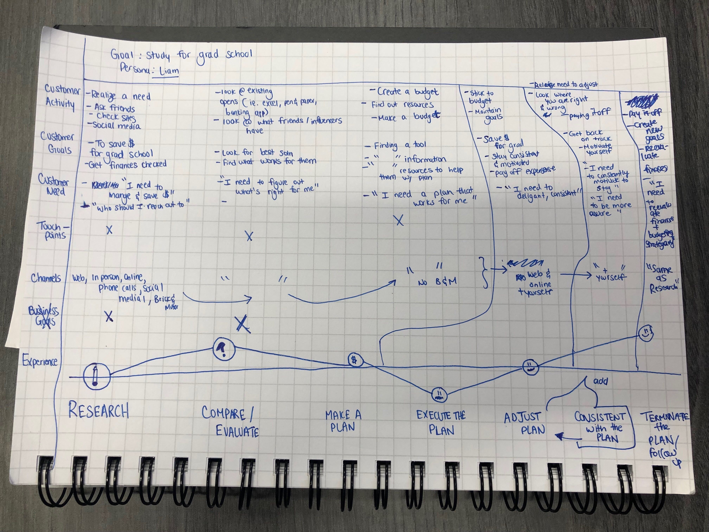
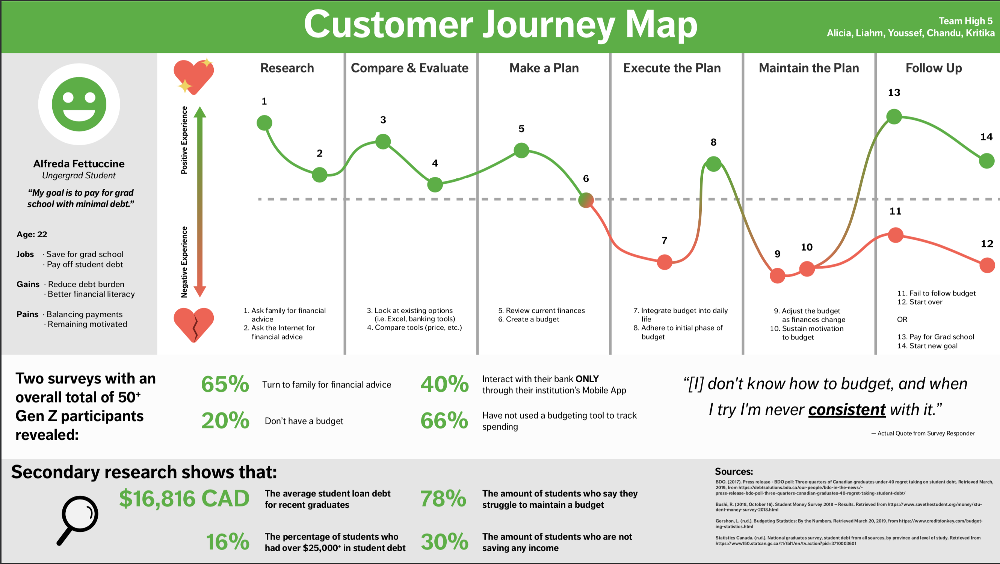
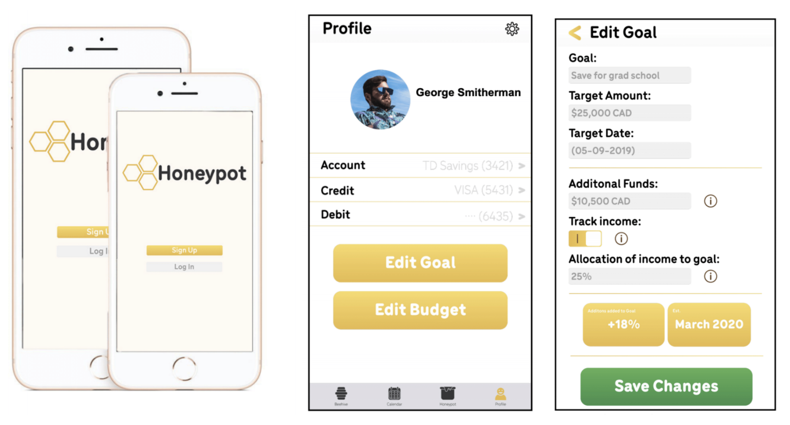
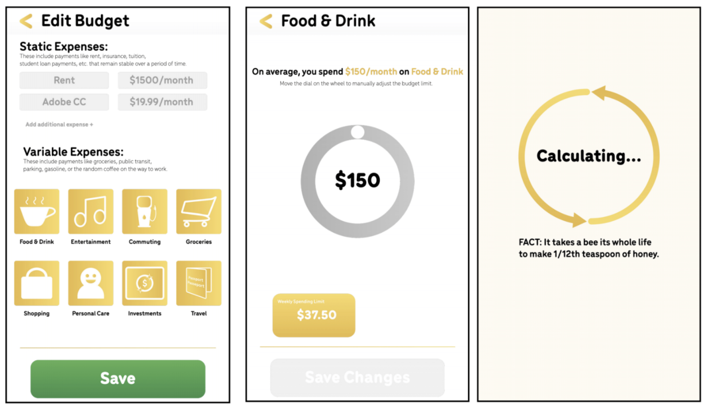
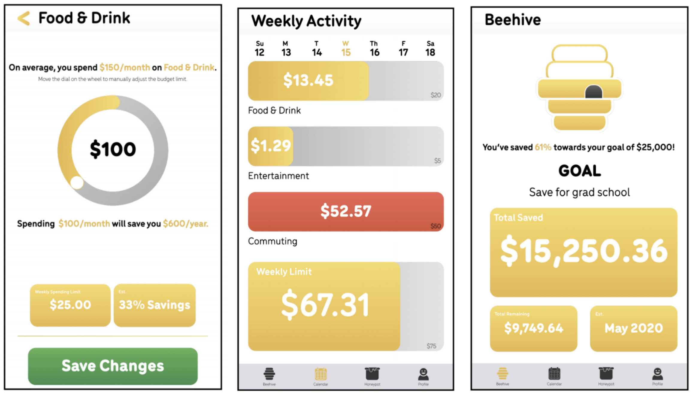
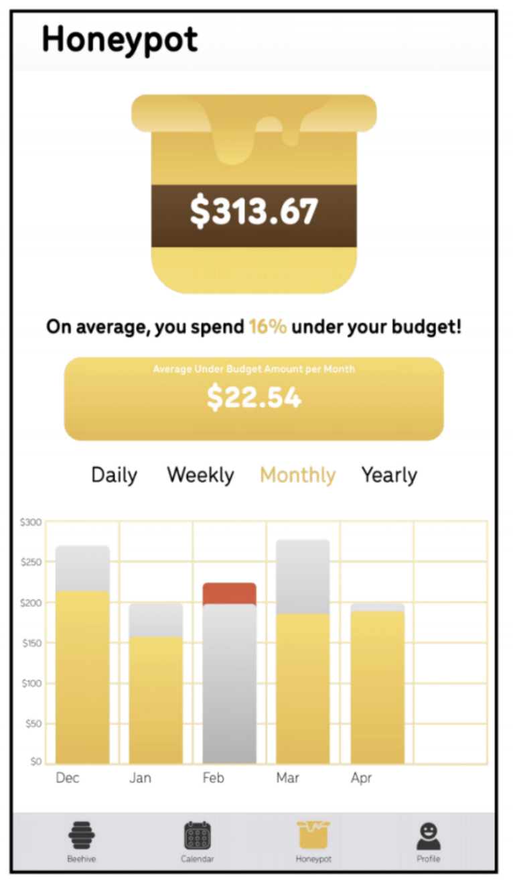

Design Process
To kickstart this project, our team decided to ask students some questions via surveys. In class, we were taught to keep our questions open-ended intially,
but dive deeper into the context of the problem with responses. We also went out and spoke to students before providing them access to the survey made using Google Docs.
The survery was created using questions from the four main categories:
Research Questions:
- Have you visited your financial institution’s website/mobile app?
- If yes how was your experience? (How easy was it to navigate through the website/app and find the information you were looking for?)
Evaluate:
- If you were to receive a large amount of money, what do you do first?
- Would you go shopping, put into savings, set aside for bills/debt, or invest?
Course of Action:
- After making a large purchase, how is your spending affected?
- Do you plan your next purchases?
- How often do you think about saving?
Implementation:
- Do you have a savings account?
- Any ideas as of how you will pay off debt?
- Have you used budgeting tools to plan out your finances?
Mapping the User Experience
From the surveys, we gathered a ton of data. In addition to user data, we wanted to map a student's expereince with TD Bank to better understand the good and bad of banking with TD.
As we all had different student bank accounts, we note common steps or user actions amongst each category of questions. Then, we identified each user step as a pro or con when looking at the holistic user experience from
signing up for a bank account to keeping a long-term account.

Identifying Actionable Steps in User Journey

Mapping a User's Journey for Ideation

User Research
I conducted interviews with students to better understand their pain points. These interviews were conducted on campus at the Unversity of Waterloo.
Addtionally, our survey was updated as we dove deeper into this project.
Our survey drove in the direction that many students identified as a pain point - budgeting.

Insights
From the student interviews, some common budgetting themes were extracted which include:
- It's hard to create a budget that fits your daily life
- It's hard to adjust your budget as you go through financial changes
- t's hard to maintain motivation to budget as time passes
Customer Journey Map (CJM)
As a team, we used a customer journey map to visualize the customer experience. Here, we identified gaps in the journey and oppourtunities for improvement across
various stages.
For this activity, we kept the persona of an undergraduate student (a.k.a Alfreda Fettuccine) in mind who had a goal of saving or budgeting for grad school.

Sketching the Customer Journey Map
Next, we thought of the experience at the "Maintain the Plan" stage and realized that the experience can vary for each user.
Maintaing the plan is equivalent to budgeting and staying motivated to keep up with budgeting.
Hence, we iterated using data from surveys to finalize a digitized version of the customer journey map.

Digitized Customer Journey Map
Using the CJM, we brainstormed solutions that help solve the gaps in the customer experience.
Brainstorming Solutions
As individuals, we looked at other products and features used in our daily lives to generate ideas for our solution.
Here we used the Crazy 8’s Design Sprint methodology, where each team member takes past in a fast sketching exercise to sketch eight distinct ideas in eight minutes.
A lot of my team members were drawn to symbols like honey and bee due to products they were actively using in their lives. I drew out a piggy bank
which represented budgetting for me.
Ultimately, we storyboaded the solution together which incorporated our different ideas. We began by sketching an engagement tool where one can track their budget using a honeypot.
The user is able to fill their honeypot if they are able to save by spending less. The honey in the honeypot would resemble budgeting towards a financial goal such as saving for grad school.
Solution
Through iteration it was understood that budgeting should be a simple, integrated process with a student's existing banking experience.
For this we included:
- Visualization - a key aspect of our solution, as students would stay motivated and enjoy the idea of budgetting.
- Personalization - setting goals, budgetting, and notifications
- Reinforcement - indicators through colours and visuals that communicate spending and progress
The final solution was a standalone mobile application that allows users to save money towards their financial goal of attending grad school via budgeting and financial tracking.
Below are the mobile app's designs which walkthrough a user's budgetting experience.
Here, the user is able to input their financial goal and set savings goals by tracking historical and current spending/income by linking their banking information through the Honeypot app.
Honeypot allows the user to adjust their budget based on different incomes and expenses they have.




Honeypot Mobile Application Designs
Our final solution integrates with TD mobile's existing banking mobile application. Each user interface is unique in solving the pain points
identified from user interviews and surveys.
Profile UI
The profile tab is the hub for information on the user. This is where banking information such as credit cards,
debit cards, and accounts would be inputted into the app. The user can personalize any settings by clicking the
gear icon at the top right of the interface where notifications, profile photo, and more can be personalized.
If the user wants to input or edit their goal or budget, they are prompted to click the "Edit Goal" or "Edit Budget"
buttons below their banking information.
Edit Goal UI
The user can input their goal information such as the name of the goal, the desired target, and the date to reach their goal by There is also the addition of adding already saved funds into the "Edit Goal" function. These could be scholarships, previous savings budgeted before using the app, and more. Honeypot also allows for the tracking of income. If the user has an income, they can set a certain percentage of any income being deposited into the account toward their goal. If the user does not track income, the tone of the app will be more focused on saving what one already has versus allocating income and savings. As the information changes, quick information like new estimated date they will be able to attain their financial goal. The user can then save the changes by clicking the Save Changes button.
Edit Budget UI
When editing their budget, the user can input their static expenses. These are expenses that remain relatively stable over a longer period. Rent for example is a monthly expense that is paid monthly and does not change usually for a year. The same can be said for subscription services that would be deemed essential like Adobe CC. These can be changed by clicking the boxes.
Variable expenses are ever-changing day-to-day or even monthly. Buying the random Starbucks, or even taking an Uber can start to add up. These categories are tracked through spending data linked through the institution. When creating the budget, the user would click the expense catagory and set the spending limits.
As seen in the UI, the process of creating a budget in the category Food 8 Drink. The user is given the information prompt that they spend an average amount of money per month; displays at the bottom show weekly spending.
When the user clicks the wheel, a new monthly spending limit is created with prompts detailing to the user new weekly spending, the percentage saved with the new spending habit, and yearly saving from the change. The user can then save the new budget via the save button.
Weekly Activity UI
In the Calendar, the weekly display of spending is visible to the user. Colour prompts indicate when one goes over budget in certain categories. A weekly indicator bar communicated overall spending helping the user reach their goal. This reinforces that while the user may be spending in one area more than others, they are still progressing to reaching their overall financial goal.
Beehive UI
In the Beehive tab, users can track their goal progression through quick information boxes. The information displayed includes the goal, the total saved, the total amount remaining to save, and the estimated date of reaching the goal with current spending habits and income generated. As the user continues to save, the beehive will begin to fill with honey indicating the progression of the user's goal.
Honeypot UI
When a user goes under budget, the difference in spending is allocated to the user's honeypot. This money is money that could be freely spent on the user's auxiliary needs without deviating from the overall goal. This could be spent on that extra coffee that you might need in the morning, or even be allocated into the overall spending goal. Visualization of past budgets is tracked through charts. The grey bars indicate the set budget for the month and gold bars show actual spending in the month. If the user goes over budget/ a red bar appears over the set budget to indicate actual spending. This information can be toggled to show daily, weekly, monthly, and yearly activity.